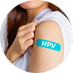
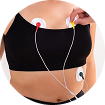
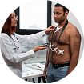
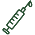

Detecção Precoce
Identifique problemas antes que se tornem graves.
Confira os principais exames de prevenção por faixa etária
Os exames preventivos são fundamentais para detectar doenças em estágios iniciais, quando o tratamento é mais eficaz e menos invasivo. Manter uma rotina de check-ups regulares pode salvar vidas e garantir uma melhor qualidade de vida para você e sua família.
Identifique problemas antes que se tornem graves.
Proteja toda a sua família com exames regulares.
Viva mais e melhor com prevenção adequada.





Realize o autoexame das mamas todo mês, entre o 7º e 10º dia após o início da menstruação.
Realize o autoexame mensalmente após o banho para identificar alterações precocemente.

Mantenha sua carteira de vacinação atualizada, incluindo reforços para tétano e hepatite B.
Cuidar da mente é tão importante quanto do corpo. Reserve momentos para relaxar e dormir bem.